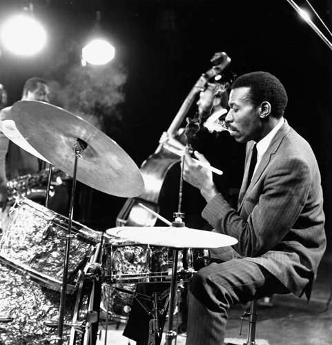

Proveniente de uma amálgama de estilos incluindo o blues – notavelmente os work songs dos escravos dos EUA - do ragtime e dos spirituals, o jazz foi um dos estilos autenticamente norte-americanos e passou por uma infinidade de transformações ao longo do século XX. Utilizado entre o fim dos anos 1910 e começo da década de 1920, o termo "jazz" foi utilizado para designar um tipo de música que nascia em localidades como Nova Iorque, Chicago e New Orleans, onde surgiram os pioneiros e principais expoentes do gênero: a Original Dixieland Jass Band e a Original Creole Jazz Band. Especialmente em Chicago, os nomes mais importantes eram Louis Armstrong e Bix Beiderbecke, seguidos pelos músicos de Nova Iorque, Fats Waller e Fletcher Henderson. A partir do ano de 1930 o gênero já se encontrava proeminente e com diversas grandes orquestras consolidadas. Entre elas, destacam-se as de Earl Hines, Count Basie, Duke Ellington e Cab Calloway.
Ainda na década de 1930 ocorre o surgimento de uma vertente mais popular do jazz, chamada de swing. Era um ritmo mais dançante com imensa aceitação na época. A partir do ano de 1945 um estilo de jazz chamado bebop surge com um ritmo mais fechado ao gosto popular, radicalizando-se a partir dos anos 1950, quando virou o hard bop. Ainda em 50, o estilo contou com nomes como Bill Evans, Thelonious Monk, Gerry Mulligan, João Gilberto, Frank Sinatra, Art Blakey, Clifford Brown, Tom Jobim, Oscar Peterson e Charles Mingus. Em detrimento do som mais agressivo destes dois estilos, surge no mesmo período o cool jazz, apresentando uma proposta mais intelectual. Em contraponto a estes estilos menos populares, um dos maiores nomes da história do jazz foi Glenn Miller, nascido em 1904. Miller foi um bandleader da era do swing e um dos artistas com maior número de vendas entre os anos de 1939 e 1942, fazendo música popular e liderando uma das mais importante big bands do período.
Na década de 1960 surgiu o freejazz, criado nos EUA por músicos como John Coltrane e Rashied Ali. Com origem no bebop, propunha improvisação e liberdade musical aos instrumentistas. Entre outras fusões, uma das mais notáveis foi a fusão do jazz com o rock’n’roll. Atualmente há espaço para diversos gêneros de jazz. Essas vertentes vão de dixieland ao experimentalismo do freejazz, passando pelos standards e por composições mais ambiciosas.